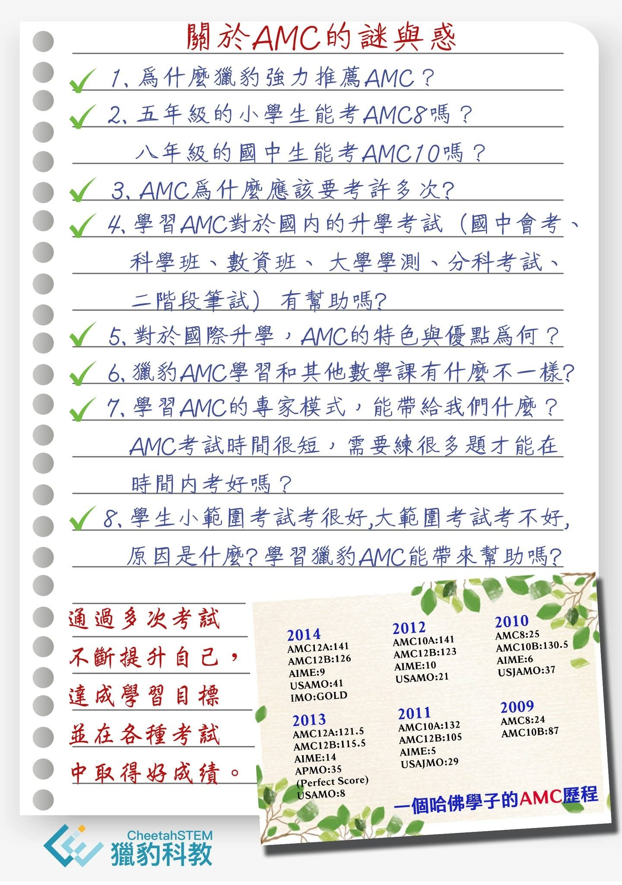

關於AMC（美國數學競賽）的Q & A
問題1.
為什麼獵豹強力推薦AMC？
答：
AMC是由MAA (美國數學協會)舉辦的 美國數學競賽系列,是全球影響最大、最權威的中學生數學競賽，每年報名參加AMC競賽的學生有好幾十萬人!
AMC不像一般數學競賽著重特殊冷僻的知識、刁鑽的解題技巧。
它的進入門檻低，考卷上的題目難度隨題號遞增，即使一般程度的孩子也可以做出不少題，不會讓學生產生嚴重挫折感。
AMC的考題多出自美國著名大學專家之手，靈活多變、推陳出新，題目富創意、趣味性高，容易啟發孩子對數學的興趣。
它貫徹 數學啓蒙教育 的理念：
將「分析、推理、歸納、的能力與思維模式」的建立與訓練置於「知識、技巧」的灌輸之上。

問題2.
五年級的小學生能考AMC8嗎？
八年級的國中生能考AMC10嗎？
答：
AMC8,10,12只設定考生的年級上限，但不設下限。
以AMC10為例，考試的內容涵蓋10年級（高一）以下。
凡是10年級以下（含）的學生都可以報名參加，即使小學生也可以。
因此許多小學生報考了AMC8,
；許多八、九年級的同學報名AMC10。
可能很多人問：如果沒有超修，八年級學生能應付AMC10 的考題嗎？
AMC的考題不側重知識，更不考課外知識，而是著重思維、推理、創意。再者，考題的知識點分佈平均，AMC8的考題有許多僅需要6、7年級的知識;
AMC10的考題有許多僅需要8,9年級的知識。
問題3.
AMC為什麼應該要考許多次?
答：
AMC是一種有效率的數學檢定，強調專家模式，易學難精。學生透過多次參加AMC，不僅可以提升數學能力和解題技巧，也能在每次考試中檢視學習成果並改進弱點。此外，這種訓練方式讓學生熟悉考試模式，提高應對能力，並有助於學測/分科考試的表現。AMC的精神就是不停努力，學生可以通過多次考試不斷提升自己，達成學習目標並在各種考試中取得好成績。
我們用一位台灣IMO國手(美國長大）的AMC歷程為例（見下圖 他在部落格上公開的資訊）。
他A8應該是從小五開始一共考了四次！
他的A10考了四次 從87考到141 （滿分150）。
A12考四次 從105考到141（滿分150）
最後他拿到IMO（數學奧林匹亞）金 牌，進入了哈佛大學。
在下圖的資料中我們看到，
他在七年級時AMC8已考了24分 ，卻仍堅持在八年級再考一次終於獲得25分（滿分）！！
曾經有一年AMC10只進步了1.5分（130.5 =》132）。
但他卻不屈不撓 、堅持到底！
這種追求超越自己的精神 實在令人感動！
問題4.
學習AMC對於國內的升學考試（國中會考、科學班、數資班、大學學測、分科考試、二階段筆試）有幫助嗎?
答：
AMC8,10,12考題的知識覆蓋了國中、高中的所有數學內容（微積分除外）。
題目難度從基礎簡易延伸到深入困難。
在獵豹，我們便有許多志在科學/數資班的學生，從國小就開始每年參加AMC8、10、12考試。
其中許多在8,9年級時便在AMC10獲得良好成績（110～120)。
他們也在後續的科學/數資班入學考試中，表現優異！
學習AMC對志在國內頂大醫學理工科系的同學的益處：
a. 學習歷程：
AMC成績可以登錄至大學申請的學習歷程，多次參加AMC考試，更能在學習歷程中凸顯個人對於持續精進數學的熱忱和努力。
b. 培養學測/分科難題的解題能力：
學測/分科是台灣升學的重要考試，但常見的解題方法往往複雜且耗時，容易出錯，導致考場上難以順利得分。獵豹的AMC專家模式訓練，則讓學生能夠迅速且準確地找出解題的關鍵，並且能夠運用簡單而直觀的方法來解決問題，進而提高學測/分科考試的表現。
此外，AMC專家模式訓練強調邏輯思考和問題解決的能力，這些在學測/分科考試中都是非常重要的。通過這種訓練，學生可以學習到如何分析問題，如何找出問題的關鍵，以及如何有效地解決問題。這些能力不僅可以幫助他們在學測/分科考試中取得好成績，也可以為他們的未來學習和職業生涯打下堅實的基礎。
問題5.
對於國際升學，AMC的特色與優點為何？
答：
《特色》：
AMC系列（AMC 8,10,12 ,AIME,USAMO,MOSP)是美國篩選IMO國家代表隊的唯一正式管道，因此也成為 「筆試競賽類」最具代表性的比賽。
《優點》：
a. 個人方式參賽 ：
有別於一些比賽是需要組隊參賽（如機器人、商賽..）
b.進入門檻低：
考題都是從極簡單的題目開始 逐漸加大難度（隨題號增加）。
考題的知識範疇全部都是課內，不像一般數學競賽許多課外知識 刁鑽的技巧。
因此學生在學習AMC時 ，也同時強化了學校的課程（對國際學校學生則大幅提升SAT的數學成績）。
c.參與成本少，便利性高：
利用網路課程、書籍便可以學習、備考，甚至自學也可。
組隊參賽的經濟或時間成本顯然很高。
特殊才藝（音樂 體育 …）的成本通常也是所費不貲。
科展活動 常需要有人脈或學校資源。
d.知名度大 含金量高。
e.非 「零與ㄧ」的比賽成果：
用百分比評分敘獎，不同目標學校 可設定不同的分數目標。（申請美國的大學Top30:晉級AIME約10%
TOP15: 5%；藤校：1%…）
問題6.
獵豹AMC學習和其他數學課有什麼不一樣?
答：
好的解題教學與訓練，包含了知識、結構、技巧、思維模式、視角與高度，要能使學生將習得的觀念延伸、轉化得長遠且多元化！
一般最被詬病的所謂填鴨式機械訓練的解題教學，是一種「短程轉移」。透過公式化的口訣與套路去熟練一堆同質性的問題（甚至只是將同樣形式的問題更換數字），這種訓練只能應付那些「制式僵化」的考試，對於數學觀念的深入、創意的啟發、研究方法的提升根本毫無價值，甚至有害！
「套路、公式、記憶、熟練…」這些低層次立竿見影的、現學現賣的學習方式無法練就舉一反十的「中程轉移」，更別說舉一反百且能另闢新局的「長程轉移」！
學生必須潛心修練、潛移默化，厚積薄發，建立起真正扎實有用的基本功，學習「科學的探索方法」，接受「專家模式」的訓練，一旦有成 ，必是頂尖高手！
這也是獵豹推廣的AMC學習核心教學理念！
問題7.
學習AMC的專家模式，能帶給我們什麼？AMC考試時間很短，需要練很多題才能在時間內考好嗎？
答：
許多人誤認為要獲得好成績，就必須花大量時間機械式地練習。然而，這種觀念並不全面。實際上，獵豹的AMC專家模式訓練強調的是理解、分析和解決問題的能力，而非機械式的重複練習。
AMC專家模式訓練讓學生們在短時間內掌握解題的關鍵，並且能夠運用簡單而直觀的方法來解決問題。這種方法不僅可以節省學生的學習時間，也可以提高他們的學習效率。
此外，這種訓練方式也強調邏輯思考和問題解決的能力，這些能力對於考試成績的提升以及未來的職業生涯都是非常有益的。孩子的時間應該有效率的花在有最關鍵有幫助地方，因此，不需要花很多時間機械練習，需要的是掌握專家模式的學習方法和思考模式，在考試中取得好成績。
問題8.
學生小範圍考試考很好,大範圍考試考不好,原因是什麼? 學習獵豹AMC能帶來幫助嗎?
答：
學生在小範圍考試如期中、期末考表現良好，但在大範圍如學測或分科考試中卻表現不佳，這是因為小範圍考試通常只針對單一或少數知識點進行考試，考題有很強的答案暗示性。然而，大範圍考試如AMC，雖然所需的知識點都是課內，但題目變化大，靈活新穎，這需要學生有更全面的知識掌握和理解，以及更強的應變能力。
藉由AMC的專家模式訓練可以幫助學生深化對數學知識的理解，提高他們的解題能力，並且培養他們面對題目變化大，靈活新穎的題目時的應變能力。此外，AMC的訓練方式強調有效率的學習和解題，可以幫助學生提高學習和考試的效率。多次參加AMC考試也可以讓學生熟悉考試的流程，提高他們在壓力下的表現，在日後從容地應對重要的大範圍考試。
https://www.facebook.com/groups/695697124716309/permalink/1315041092781906/